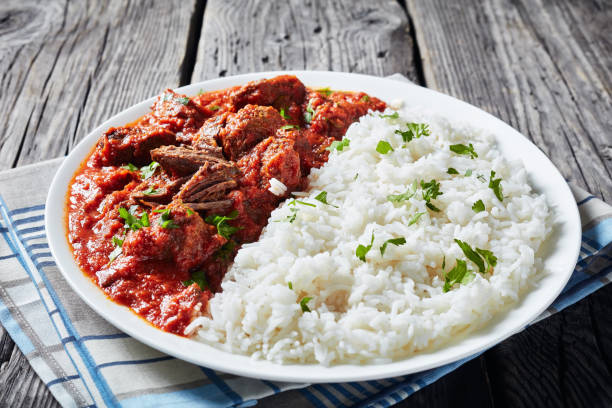

White Rice

Description
White rice with stew is a classic and widely enjoyed meal, known
for its simplicity and comforting taste. The fluffy, plain rice
serves as a neutral base that pairs perfectly with a rich,
flavorful tomato stew made with peppers, onions, spices, and
protein of choice. It is a staple dish appreciated for its
balance, versatility, and everyday appeal.
Ingidients
For the rice
- Long-grain white rice
- Water
- Salt
For the stew
- Fresh tomatoes
- Red bell peppers
- Scotch bonnet peppers
- Onions
- Vegetable or palm oil
- Tomato paste
- Chicken, beef, or fish
- Stock or water
- Curry powder
- Thyme
- Bay leaves
- Salt
- Seasoning cubes or powder
Steps
- Wash and cook the rice in water with a little salt until tender.
- Blend tomatoes, peppers, and onions for the stew.
- Cook the blended mixture with oil and tomato paste until thick.
- Add seasoning, spices, and stock.
- Add protein and simmer until the stew is well cooked.
- Serve the stew over plain white rice.
Home